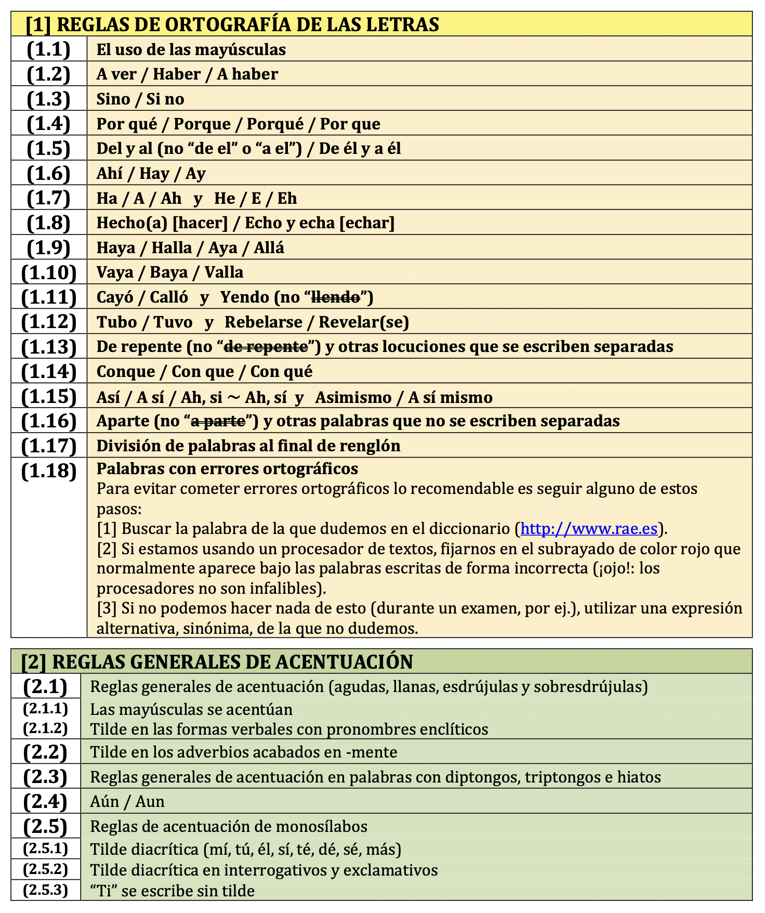
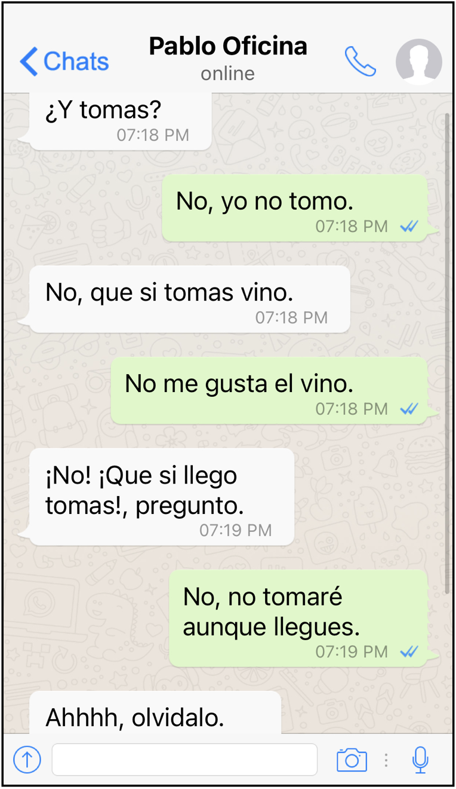

Propuesta didáctica para trabajar aspectos formales de la expresión escrita
(1 y 2) Ortografía de las letras y las tildes
Diálogo de besugos
¡Vaya lío de conversación que ha mantenido Javier con Pablo, su compañero de la oficina! Nos ha mandado la siguiente captura de pantalla para que podamos comprobar el despropósito de respuestas que han intercambiado. Pasa que Pablo no utiliza jamás en las aplicaciones de mensajería instantánea las mayúsculas o las tildes, y claro, pasa lo que pasa... Pasa que Javier no lo ha entendido. Solo después, al rato, cuando Pablo se ha enfadado y él ha releído el texto, ha caído en la cuenta.

Una vez hayas comprendido la razón por la que no se ha efectuado de manera efectiva la comunicación entre estas dos personas, explica el motivo que lo ha impedido (sí, será como explicar un chiste malo después de que alguien te lo cuente y te hayas reído). Será de obligado cumplimiento que tu explicación incluya los siguientes términos: mayúsculas, reglas de acentuación y palabras homónimas.
¡Explícalo tú! (y pon a prueba a la clase!)
¿Te sientes capaz de explicar estas normas en el aula? Después de repartíroslas, cada persona se va a encargar, en primer lugar, de (a) explicar por turnos cada una de las reglas ortográficas de las letras y de las tildes asignada (a ser posible proporcionando múltiples ejemplos que resulten aclaratorios y, por supuesto, señalando también trucos o consejos para no equivocarse ya nunca más); en segundo lugar, también se va a encargar de (b) retar al grupo poniéndolo a prueba: la exposición finalizará siempre con una batería de ejercicios de la regla descrita, de manera que la persona que exponga se convierta completamente en profe por un rato. En consecuencia, resulta indispensable que os repartáis las normas recogidas en el documento que hallaréis más arriba (alguien se encargará de la regla [1.1]; otra persona, de la [1.2], y así sucesivamente hasta completar todo el apartado [1] -ortografía de las letras- y [2] -ortografía de las tildes-; resultará bastante posible que haya más normas que personas en el grupo: en ese caso, podéis solucionarlo explicando más de una norma por persona). ¡Adelante, dejad a la persona que os dé clase con la boca abierta sacando a relucir todas vuestras cualidades para enseñar!
[Sugerencia para el profesorado para evaluar estas producciones orales: http://lticyl.blogspot.com/2017/09/rubrica-para-la-evaluacion-de-la.html]
Si lo deseáis, podéis llegar a grabar la explicación en vídeo. ¡Sin pánico!, no es necesario que aparezcáis directamente en él: pueden aparecer solo las manos mostrando cartulinas sobre un fondo monocromo, por ejemplo, como en la primera muestra que se incluye a continuación, grabada desde una perspectiva cenital; o, incluso, si tenéis una cierta desenvoltura con las tecnologías de grabación y edición de vídeo, podéis optar por soluciones más originales e imaginativas, como el segundo ejemplo que se incluye abajo.
¡Corrijamos en grupo un texto!
- Duración:
- 60:00
- Agrupamiento:
- Equipos de 4 o 5 personas
- Dividid la clase en equipos de cuatro o cinco integrantes. Se os repartirán a continuación por grupo dos copias del siguiente texto.
- Durante veinte (20) minutos, trabajaréis con las otras personas que componen el equipo corrigiendo el texto. ¡No llevéis a cabo estas anotaciones sobre el documento proporcionado!: haced las anotaciones pertinentes en el cuaderno o en una hoja aparte.
- Pasados estos veinte (20) minutos, se realizará la puesta en común. Los distintos grupos participarán en orden, teniendo la oportunidad de enmendar un único error en cada turno. Se establecerá un sistema aleatorio para que, en cada turno, intervenga únicamente la persona integrante del equipo escogida al azar. Sistema de puntuación: Únicamente se dará por buena la detección y corrección del siguiente error en aparecer en el texto (aunque se hubiese detectado otro existente en él, solo se considerará válida la identificación del inmediatamente siguiente). Se concederá un (1) punto al equipo en caso de identificarlo y corregirlo adecuadamente; serán dos (2), en cambio, si, además, consigue aportar la explicación aclaratoria.
.png)
Obra publicada con Licencia Creative Commons Reconocimiento No comercial Compartir igual 4.0